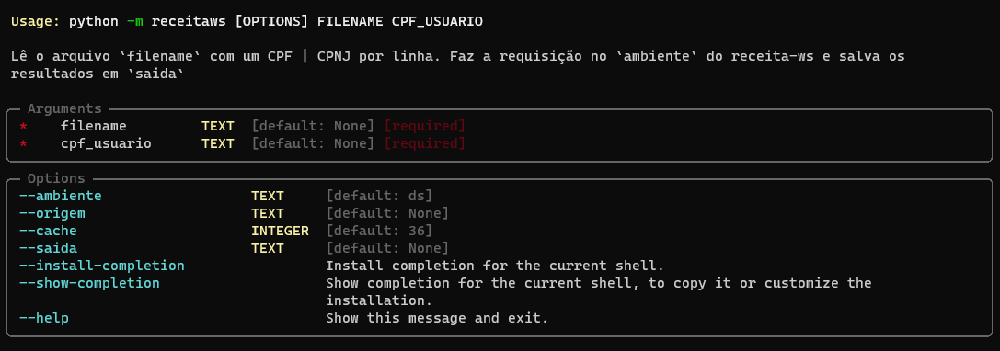

from receitaws.consultas import requisitar_em_loteReceita-WS
Este repositório possui funções auxiliares para fazer requisições REST à API para acesso aos dados atualizados da Receita Federal relativos a pessoas físicas e jurídicas.
Para tal, ele acessa o serviço web Receita WS desenvolvido na Anatel. Este por sua vez é um encapsulamento, com cache em banco, do Serviço Web Infoconv, disponibilizado pela Serpro/Receita Federal, por meio de convênio firmado com a Anatel.
Instalação
python
Caso não tenha o python instalado, baixe a versão para a sua plataforma neste link e siga as instruções.
❗ Alternativamente, para uma plataforma de desenvolvimento mais versátil recomendamos que seja instalado o miniconda, que é uma versão mínima do Anaconda.
⚡ Para uma versão otimizada do miniconda, com excelentes defaults, recomendamos ainda que seja instalado o miniforge,
Ambiente Virtual
Primeiramente é recomendado a criação de ambiente virtual para instalar o módulo, assim a versão python deste e suas dependências não afetam a instalação do python padrão:
Modo 1 - Utilizando o módulo venv (disponível em qualquer instalação padrão do python3):
python -m venv <pasta>Desse modo será criado o ambiente virtual na <pasta>
Para ativar o ambiente virtual:
Windows
Utilizando o Prompt de Comando: cmd.exe
<pasta>\Scripts\activate.batUtilizando o PowerShell:
<pasta>\Scripts\Activate.ps1Linux e MacOS
source <pasta>/bin/activateModo 2 (Recomendado) - Utilizando o conda (disponível em qualquer uma das instalações: Anaconda | Miniconda | Miniforge):
conda create -n <nome> python=3.10 -yDesse modo será criado um ambiente virtual com o nome <nome> criado na pasta interna do conda.
Para ativar o ambiente virtual conda:
conda activate <nome>Instalação do módulo receitaws
Com o ambiente virtual criado e ativado, em qualquer um dos modos mostrados no parágrafo anterior, basta efetuar o comando:
python -m pip install git+https://git.anatel.gov.br/rsilva/receitaws.git☝ Como este é um serviço de uso exclusivo na rede interna da Anatel e por logins autorizados, a instalação é feita diretamente pelo repositório:
Como utilizar
A biblioteca nbdev possui somente 1 módulo consultas, cuja API principal é a função requisitar_em_lote:
requisitar_em_lote
requisitar_em_lote (filename:str, cpf_usuario:str, ambiente:str='ds', origem:str=None, cache:int=36, saida:str=None)
Lê o arquivo filename com um CPF | CPNJ por linha. Faz a requisição no ambiente do receita-ws e salva os resultados em saida
| Type | Default | Details | |
|---|---|---|---|
| filename | str | Arquivo texto de entrada: 1 CPF | CNPJ por linha | |
| cpf_usuario | str | CPF do usuário requisitante | |
| ambiente | str | ds | Ambiente onde realizar a requisição: ds | hm | su | pd |
| origem | str | None | Texto com identificação da requisição: e.g. ‘Teste’ |
| cache | int | 36 | Tempo de expiração do cache em meses |
| saida | str | None | Arquivo de saída da requisição |
| Returns | None |
⚠️ Como arquivo de entrada é esperado um arquivo texto, e.g.
csv | txt | tsv etc...com 1 registro por linha!
cpf_usuario = input('Digite seu CPF para Identificação: ')
requisitar_em_lote(filename=r'D:\Code\receitaws\dados\cpf.csv',
cpf_usuario=cpf_usuario,
ambiente='ds',
origem='Teste DS',
cache=3,
saida=r'D:\Code\receitaws\dados\resultados_cpf.csv')Arquivo de Saída
O formato do arquivo de saída é automaticamente identificado pela extensão do argumento saida, os valores possíveis são csv | xlsx | html | md, para salvamento em formato tabular, ou no formato json. Caso seja fornecido uma extensão não suportada ou não seja fornecido um nome de arquivo de saída, será salvo um csv na pasta onde é feita a requisição.
💯 Todos os dados retornados pelo web service são salvos!
resultados = pd.read_csv(r'D:\Code\receitaws\dados\resultados_cpf.csv')
resultados.iloc[:, 1:] # Ocultar o CPF requisitado| nome | situacaoCadastral.codigo | situacaoCadastral.valor | paisResidencia.residenteExterior | paisResidencia.codigoPais | nomeMae | dataNascimento | sexo.codigo | sexo.valor | ocupacao.naturezaOcupacaoCodigo | ... | telefone.ddd | telefone.numero | unidadeAdministrativaCodigo | anoObito | estrangeiro | tituloEleitor | dataAtualizacao | dataRegistroAnatel | resultado | erro | |
|---|---|---|---|---|---|---|---|---|---|---|---|---|---|---|---|---|---|---|---|---|---|
| 0 | Tuwpoxtzyzzruazdjdsqmaewylowhy | 2 | Suspensa | True | 0 | Sjflu Ifgemqkhdjvpgcjewylowhy | 1937-10-25 | 1 | Masculino | 36 | ... | 25 | 31297214 | 1008514 | 0 | False | 0 | 1962-02-17 | 2022-08-16 | CPF encontrado | NaN |
| 1 | Tow Dh Vrmadfgixfxaxqupjkfp | 8 | Nula | True | 0 | Bvgoxicrewhewdrt | 1917-06-28 | 2 | Feminino | 5 | ... | 25 | 97620714 | 7431014 | 0 | False | 0 | 1964-12-23 | 2022-08-16 | CPF encontrado | NaN |
| 2 | Tuwpoxtzyzzruazdjdsqmaewylowhy | 2 | Suspensa | True | 0 | Sjflu Ifgemqkhdjvpgcjewylowhy | 1937-10-25 | 1 | Masculino | 36 | ... | 25 | 31297214 | 1008514 | 0 | False | 0 | 1962-02-17 | 2022-08-16 | CPF encontrado | NaN |
| 3 | Tow Dh Vrmadfgixfxaxqupjkfp | 8 | Nula | True | 0 | Bvgoxicrewhewdrt | 1917-06-28 | 2 | Feminino | 5 | ... | 25 | 97620714 | 7431014 | 0 | False | 0 | 1964-12-23 | 2022-08-16 | CPF encontrado | NaN |
| 4 | Tuwpoxtzyzzruazdjdsqmaewylowhy | 2 | Suspensa | True | 0 | Sjflu Ifgemqkhdjvpgcjewylowhy | 1937-10-25 | 1 | Masculino | 36 | ... | 25 | 31297214 | 1008514 | 0 | False | 0 | 1962-02-17 | 2022-08-16 | CPF encontrado | NaN |
| 5 | Tow Dh Vrmadfgixfxaxqupjkfp | 8 | Nula | True | 0 | Bvgoxicrewhewdrt | 1917-06-28 | 2 | Feminino | 5 | ... | 25 | 97620714 | 7431014 | 0 | False | 0 | 1964-12-23 | 2022-08-16 | CPF encontrado | NaN |
| 6 | Tuwpoxtzyzzruazdjdsqmaewylowhy | 2 | Suspensa | True | 0 | Sjflu Ifgemqkhdjvpgcjewylowhy | 1937-10-25 | 1 | Masculino | 36 | ... | 25 | 31297214 | 1008514 | 0 | False | 0 | 1962-02-17 | 2022-08-16 | CPF encontrado | NaN |
| 7 | Tow Dh Vrmadfgixfxaxqupjkfp | 8 | Nula | True | 0 | Bvgoxicrewhewdrt | 1917-06-28 | 2 | Feminino | 5 | ... | 25 | 97620714 | 7431014 | 0 | False | 0 | 1964-12-23 | 2022-08-16 | CPF encontrado | NaN |
| 8 | Tuwpoxtzyzzruazdjdsqmaewylowhy | 2 | Suspensa | True | 0 | Sjflu Ifgemqkhdjvpgcjewylowhy | 1937-10-25 | 1 | Masculino | 36 | ... | 25 | 31297214 | 1008514 | 0 | False | 0 | 1962-02-17 | 2022-08-16 | CPF encontrado | NaN |
| 9 | Tow Dh Vrmadfgixfxaxqupjkfp | 8 | Nula | True | 0 | Bvgoxicrewhewdrt | 1917-06-28 | 2 | Feminino | 5 | ... | 25 | 97620714 | 7431014 | 0 | False | 0 | 1964-12-23 | 2022-08-16 | CPF encontrado | NaN |
10 rows × 30 columns
Ambientes
A mesma requisição pode ser feita nos ambientes: * Desenvolvimento: ds (padrão) * Homologação: hm * Sustentação: su * Produção: pd
Tipo de Requisição: CPF ou CNPJ
🧠 O tipo de requisição é automaticamente identificado pelo tamanho do identificador no arquivo:
- 11 👉
CPF - 14 👉
CNPJ
Utilização do Cache em Banco
O argumento cache é o número de meses que devemos considerar antes de fazer a requisição.
Caso o intervalo de tempo entre a data da requisição e a data de atualização do registro em banco corporativo for inferior ao cache, o registro do banco é retornado em lugar de se fazer a requisição ao Infoconv da receita federal 😎
Isso foi uma solução para evitar requisições, e por conseguinte cobranças desnecessárias, de registros que já estão com atualização recente em banco 🤑
Script em linha de comando
A API principal requisitar_em _lote pode ser executada programaticamente em linha de comando:
